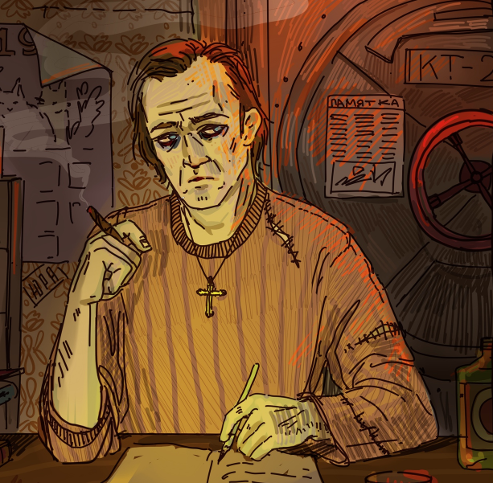

Отцы и дети
- Ничего так костер, - отвлеченно подметил хрипловатый женский голос.
Её язык волею судеб пока был здесь, но сама она – уже нет.
- Чего же ему быть плохим, - со слегка растерянной улыбкой отвечал человек, приютивший даму у огня. Он на несколько секунд погрузил черный конец посоха в пламя и вынул.
Едкие, ползущие вглубь залысины прикрывали черные татуировки, с шеи свисали путанные нитки, увешанные камешками и костяшками. На вид человеку было лет тридцать, самое большее – тридцать пять.
- Может, расскажешь свою историю, а? – девушка его заинтересовала. Он вообще был любопытным.
Дым от огня таял в окружающем бетоне. Камень впитывал черную копоть, как губка.
- Не хочу, - сквозь хрипотцу, сквозь сутулую осанку головореза или бродяги, сквозь пыльный серый пиджак, великоватый на худые плечи, просачивалось что-то детское.
Она казалась ему ребенком, эта девушка. Притом, что виделась опасностью.
И человек всё никак не мог уловить глаз, скрытых за низко надвинутой клетчатой фуражкой. Только ощущал их прохладную тень.
- За гостеприимство можно было бы и отплатить, - слегка обиженно бурчит, - хоть банальной вежливостью.
Девичья рука скользнула в карман и через пламя бросила что-то перед ним: ракушка. Вымазанные в саже, пыли и штукатурке руки бережно подняли её, слегка тёплую, осмотрели и сунули в карман.
Да: возникать насчёт платы теперь будет по меньшей мере нагло.
- Этого, пожалуй, слишком много… - плечи съежились под свободной накидкой, но голос выдавал, что отдавать ракушку назад ему вовсе не улыбается.
- Неважно. Моя история уже близится к завершению. Мне оно ни к чему.
- Нельзя быть уверенным, что что-то заканчивается именно сейчас, - осторожно высказывает, ещё надеясь выудить из неё чего-нибудь. – Жизнь богата на неожиданности…
- А я уверена.
- Всё может повернуться в последний момент, - авторитетно заявил он, почуяв знакомую опору под ногами. – Я знаю много случаев, когда казалось: конец – а всё только начиналось. Уверенность – опасная вещь. Она всегда приводит к разочарованиям. Нельзя быть уверенным ни в чем.
- Да, я знаю, что нельзя, - хриплый голос сквозил равнодушием, сгорбленная фигурка с руками, сложенными на коленях, не шелохнулась. – Но я уверена. Я поднимусь на три этажа, войду в дверь, и всё закончится. Так или иначе.
Он качнул головой:
- Зря. Чем менее ты уверена, тем легче…
- Да мне плевать.
В её руках появилась сигарета, которую она поднесла к костру, подавшись вперед – и на миг теплые оранжевые пальцы коснулись её лица, её губ, окаймленных гладкой розовой сыпью – её глаз…
«Совсем девчонка», - подумал человек.
Девушка сделала глубокую затяжку – снова невидимая, снова в длинной тени фуражки.
- Может, ты всё-таки расскажешь о себе? – попробовал он ещё раз после длительной паузы. – Говоришь, твоя история заканчивается. Полезно вспомнить, что было, перед тем, как сделаешь что-то важное. Да и, как я понимаю, дело у тебя опасное – мало ли что случится. А так твоя история не пропадет, не исчезнет…
- Неа. Я пойду, наверное, - она ещё раз затянулась, встала, сунув свободную руку в карман пиджака, развернулась и пошла прочь от костра, от человека и от его дешевых мудростей.
Перед лестничной клеткой остановилась – вдох, еле заметно глубже, чем остальные. Докурила, поправила фуражку, кинула на пол дымящийся окурок.
И стала на ступеньку.
Три этажа тянулись медленно. Одинаковые серые стены вязко текли, шуршали бесконечно осыпающейся штукатуркой, ступеньки равнодушно отзывались глухими звуками. Не то, чтобы не хотели отпускать – просто им было слишком всё равно, чтобы проходить быстрее.
Но когда она дошла, ей всё равно показалось: слишком резко.
Как удар колокола – прямо в виски.
«#556@772#*567» - жирная, монументальная надпись на стене.
В коридоре некому было услышать её участившееся дыхание – она и сама не слышала.
Дверь из кошмарных снов оказалась прямо перед ней – и, кажется, совсем по этому поводу не беспокоилась.
Та самая дверь, та самая дверь – и двери нет до неё дела. Никто не встретит, никто не откроет.
Нет. Она может войти только сама.
Толстая, грязно-красная железная дверь – пятна крови едва-едва выделяются.
По всей поверхности – белые крошащиеся царапины от огромных когтей: из-за них цвет скорее серо-бурый.
Пальцы вздрогнули, коснувшись холодной ручки: испугались, что сейчас проснутся.
Нет. Этого не произойдёт. Не на сей раз.
Она входит.
Внутри воняет: воняют подранные ковры на стенах, целиком пропитанные смесью из телесных жидкостей, воняют липкие полы, на которых давно не осталось никакого покрытия, воняют остатки трупов, сложенные где-то тут, неподалеку.
Когда-то она здесь жила?
Вперед: ноги понесут сами.
В квартире не осталось дверей. Только пустые проемы и щепки. Шкафы развалились на распятые доски, пух из матрасов смешался с пылью, шторы расползлись по всем углам гнилой ветошью.
Тошнота, непроизвольная гримаса на лице – это всё отдельно, не с ней. С кем-то ещё.
…ноги знают, где он.
Пройти коридор, пока по бокам зияют бесконечно разлагающиеся комнаты, два санузла, вот там – кухня…
Позыв к рвоте еле удается сдержать – но не ей, нет: к её горлу тоже что-то поднимается – только другое.
…повернуть здесь…
Он сидит в окружении костей, как сказочный дракон, разросшийся, колючий, бултыхающийся – громко сопит и источает жуткое зловоние. Чешуя бугрится, дышит – в одной точке громадного тела опадает, в другой вздымается.
- Здравствуй, бать, - сказала она, и организм мигом заткнулся, забыв о всех своих капризах.
Что-то в нём изменилось. Едва уловимо.
Руки скользнули в карман. Сигарета легла в синеватые, очерченные мелкими прыщиками губы, щелкнула зажигалка.
- Видишь? Дочь твоя в шестнадцать курит. Хреновый из тебя отец, - пачка с зажигалкой вернулись на место.
Тело затряслось и заворочалось. Выглянула одна из лап – десятисантиметровые когти.
- Поэтому я тебя убью, - донеслись слова – неужто из её рта?
Звучало так, как будто чертовы сигареты и есть причина всего.
За мгновение появившийся из пиджака наган восемь раз громыхнул и жалобно защелкал, бесплодно вертя барабан – а громадина наконец-то проснулась.
И заревела.
Рев такой же неровный, как плоть: в одну секунду до жути низкий, раскатистый, в следующую – почти жалобный, противно-болезненный.
Места, куда попали выстрелы, зашипели, задымились, заплавились – в них образовались уродливые выемки. И…
И всё.
Куски мяса и кости взметнулись, когда Отец рванул вперёд – во все стороны полетели брызги перемешавшейся крови жертв: Дочь уже не видела ничего глазами, она сразу поняла, что нужно бежать, и только почувствовала, как что-то мягкое, влажное шмякнулось ей в спину, как липко намокла шея и затылок.
Коридор пролетел за считанные секунды, она вылетела в подъезд, и дверь, не успев захлопнуться, была оттолкнута воющим вихрем плоти: на волосы брызнула слизь.
Вверх, вверх по ступенькам, быстрее, только быстрее – и даже почти не жаль выпавшую сигарету. Вниз он просто стечет, а вверх есть…
Что у неё есть?
Шанс?
Какой?
Ноги перебирают ступеньки, локти молотят воздух, легкие шумно раздуваются.
Перезарядиться на ходу?
Когтистая лапа, вынырнувшая из-под горы бешено ползущей массы, зачерпнула воздух в опасной близости от её стопы – и походя сорвала перила, с грохотом отлетевшие в стену.
Нет, о том не может быть речи – нельзя отвлечься ни на секунду.
Да и что это даст? Чудо-патронов было всего четырнадцать. Если бы попасть в жизненно важные органы…
Но откуда она их достанет?
Где у этой твари органы?
Она кинула беглый взгляд вниз – и поспешила его отвести.
Колючая чешуйчатая громадина передними лапами отставала всего на несколько ступеней – а телом занимала целую лестничную площадку.
Заняла бы – но постоянно двигалась, не останавливаясь ни на миг.
Отец её догонит – вот что поняла Дочь.
Рано или поздно Дочь выдохнется. А дышит ли он вообще – большой вопрос.
Ведьма – дала ей шприц. Только он кажется какой-то шуткой.
«Вколи в лапу или в брюхо, и победишь. В лапу или в брюхо – иначе не подействует»
Как, как ей вколоть живой смертоносной буре иглу в лапу, ещё и довести поршень до конца?
Невозможно.
Тогда, спящий, он бы не дал – весь спрятался за плотью, да и один близкий шаг его разбудит – а сейчас…
Какой тут, мать его, шприц?
Дочь бежала, так быстро, как могла.
«По крайней мере, всё правда закончится»
Штукатурка сыпалась от тряски огромного тела Отца.
Этаж за этажом, этаж за этажом – и ощущение того, что он всё ближе. На считанные миллиметры – но ближе.
И не замолкающий вой, тоскливо-жадный вой.
А воздуха в выдохшуюся грудь помещается меньше. Ступенька – на миллиметр меньше, ступенька – меньше.
Она сделала что смогла, разве не так?
Не самый хороший конец. Но какая, в сущности, разница?
Главное, что…
«Нет»
Оценивающий взгляд – нельзя позволить себе больше взгляда – окидывает пролетающий этаж.
Ничего, ничего…
Рано или поздно должно повезти.
Ничего, ничего…
Очередной пролет – и, прежде чем что-то удается понять головой, Дочь соскакивает с лестничной клетки, прямо к двери, кем-то оставленной приоткрытой, рывком распахивает и врывается внутрь.
Кровь на полу.
Она рассеянно смотрит по сторонам, пока ноги по инерции делают шаги вперед – к стене.
«Наверное, кого-то убили. Поэтому дверь открыта – тащили труп, не позаботились…»
К тупику.
Странное место. Ничего нет, кроме крови, прохода налево – не успеть повернуть – и рамок с дряхлыми кусками жирной ткани.
Всё это как-то походя прокручивается в её голове, пока она не останавливается, уперевшись вовремя выставленными руками в бетон.
Поворачивает шею – и видит, как к ней несется протиснувшаяся в дверь туша, втекает и сразу занимает пространство от стены до стены – лапы с бешеной скоростью кидают вперед гору колючего слизистого мяса.
«Конец»
Вой – чем оно воет? Пастью где-то там, под бесконечными массами плоти? Как тогда звук сохраняет громкость?
Почему не гасится?
Или кричит сама эта бесцветная бугристая поверхность, кричит уродливыми дрожащими порами?
Несется на неё, и, даже если бы захотело, не успеет остановиться.
Раздавит.
Главное, что всё закончится.
Острая резь в стопах – и мир переворачивается. Несколько раз.
Она летит над несущимся телом, всего несколько сантиметров не доставая хребтом до потолка: зажата между живым мясом и холодным бетоном.
Шипастые бугорки с запозданием вытянулись вверх – но лишь один задел её, порвав штанину и оставив на голени долгую красную полосу.
Приземляется на ноги, ещё раз кувыркнувшись в воздухе – слышит, как туша врезается в стену. Откручивает засов одной рукой, другой прижимает, и выскакивает наружу, в коридор, захлопнув дверь, в тот же миг содрогнувшуюся от удара.
Она стоит, слушая, как герметичный металл методично избивают изнутри. Штанина пропитывается стекающей кровью.
Яда на шипе хватило бы, чтобы убить человека.
Ещё одна сигарета вылезает к пальцам из кармана пиджака. Щёлкает зажигалка. Дым втягивается в легкие и медленно выталкивается обратно в пыльный мир.
Дочь, стараясь не напрягать раненную ногу, ковыляет по коридору, проверяя то одну дверь, то другую, пока Отец силится пробиться из западни. Маленькие кучки пепла падают на пол сухими каплями.
Обещание нарушено. Снова.
Ступни босы – порванные ботинки остались в том помещении.
Дочь глухо цокает на каблуках, подарке Младшей Сестры: два саблеобразных костяных нароста с бритвенно острыми краями. Они спасли ей жизнь, подбросив в воздух.
Обещание быть человеком – не сдержала. Опять.
Какой-то по счету вентиль оказался благосклонен – пустил внутрь.
Она заперла дверь, прошла несколько метров вперед и села на какой-то деревянный ящик, закинув ногу на ногу – забывшись, едва не задела костяным лезвием своё колено.
Где-то там, в коридоре, с лязгом вылетела дверь.
Время пройдёт, прежде чем Отец доберется сюда – проверит каждую комнату по пути, обрыщет, обшарит каждый уголок. Знает, что никуда Дочери не деться – где-то тут. Не спеша, внимательно изучит каждый вариант. Учёный склад ума.